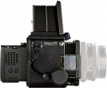

无忌
器材库
全部器材
产品年表
名词百科
榜单
器材库
> 大中画幅可换镜头数码相机 > RZ22

玛米亚
RZ22
分类
大中画幅可换镜头数码相机
点评
0 条
图片
0 张
评测
0 篇
这是第二款RZ系列数码相机，这台装有2200万像素CCD传感器的相机，由DM22数码后背和玛米亚RZ67 Pro-IID机身组成。
产品类型
大中画幅可换镜头数码相机
综合评分
暂无评分
无忌评测
暂无评测
规格参数
网友点评
(0)
产品图 / 样片
(0)
评测文章
(0)
规格总览
产品类型
大中画幅可换镜头数码相机
发布日期
2010-10-28
厂家推荐价格
11,499.00 （美元）
影像规格
影像传感器
CCD
影像传感器尺寸
48×36mm
有效像素
2200万
最大解像度
5356×4056
静态图像格式
RAW
镜头和对焦
镜头卡口
Mamiya RZ
曝光控制
快门速度
8 - 1/400秒, B, T
ISO感光度
25 - 400
连拍
0.8秒/张
取景器/显示屏
取景器
标准为折叠式腰平取景器（带可翻转的放大镜），自动曝光矩阵棱镜取景器（可选），无测光棱镜取景器（可选）
取景范围
99%
LCD尺寸
2.4×2.7英寸
LCD特性
触摸屏
文件输入/输出
存储卡
CF
数据接口
IEEE1394
电源
电池
RZ机身：一枚6V氧化银或6V碱性电池（PX28或4SR44或4LR44）；数码后背：一枚7.2V可充电锂电池
机身规格
颜色
黑色
尺寸
165×155×132mm
重量
2088g
其它
附件
RZIID机身, DM22数码后背和电池, 电池充电器, FW800电缆, 软件光盘
软件
Capture One, Leaf Capture
该产品暂无存档的网友点评
该产品暂无存档的产品图
评测 / 相关文章
该产品暂无存档的评测文章
相关文章
［资讯］玛米亚发布新款RZ22中画幅数码相机
（原站已下线）
［资讯］传奇再现，玛米亚RZ33正式发布
（原站已下线）